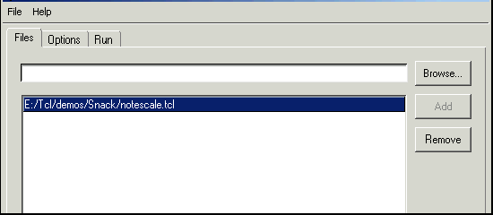
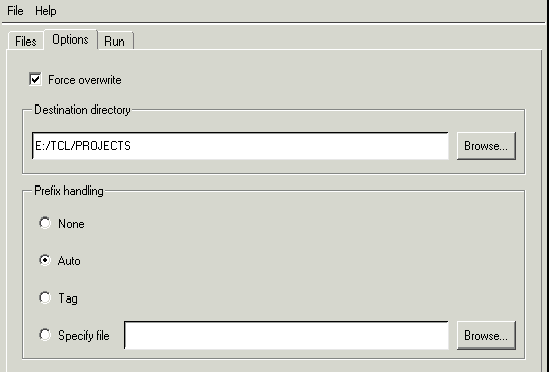
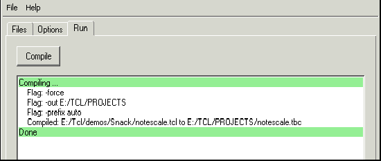

Traditionally, Tcl code has been distributed in source form. This had the advantage of being simple to use and allowing users to customize the code, but it had some disadvantages: you can't keep proprietary information secret and it may be harder to support users if they modify the code. Tcl Dev Kit Compiler eliminates these disadvantages by translating the Tcl scripts into bytecode format. You can distribute bytecode files to users to protect your intellectual property and simplify support.
Tcl code was traditionally interpreted on an as-needed basis. Before Tcl Version 8.0, the Tcl core did not include an internal compiler. Tcl Version 8.0 included a compiler; however, this compiler was internal to the interpreter, and compiled scripts could not be saved for later use. Tcl Dev Kit Compiler lets you compile scripts independently of execution, then store them so you can load and execute the bytecode file when you want to.
When you use Tcl Dev Kit Compiler, the bytecode file is stored as Tcl byte codes with the default extension .tbc. For example: if you compile the script foo.tcl with Tcl Dev Kit Compiler, the bytecode file is stored as foo.tbc. When you want to use the bytecode file, you can source it without spending the time to recompile foo.tcl.
You can distribute a bytecode file; this allows you to avoid shipping the Tcl source code, thus keeping your code secure. Bytecode files can also be used with TclApp to create bundled applications that don't require special installation; see TclApp.
Note: The Tcl Dev Kit Compiler supports Tcl versions 8.4 and later.
Tcl Dev Kit Compiler compiles Tcl files, creating bytecode output files with a .tbc extension.
To run the Tcl Dev Kit Compiler at the command line on Windows,
enter tclcompiler.exe. To run the Tcl Dev Kit Compiler in
a Unix shell, enter tclcompiler. The examples shown below
are for Windows.
The -help flag displays help on all available command-line options.
To compile a Tcl script:
tclcompiler.exe <filename>.tcl
This command creates the output file filename.tbc.
You can specify multiple input file names on the command line; the bytecode files will have the same basenames as the input file, but with the .tbc extension. You can use wildcards in the file names following glob conventions. For example, to compile all .tcl files in C:\dir1:
tclcompiler.exe c:\dir1\*.tcl
The output files are created in the same directory as the input files.
To rename a file while compiling it, use the -out flag (tclcompiler.exe -out newfilename oldfilename). For example, to rename foo.tcl to bar.tst, you would type:
tclcompiler.exe -out bar.tst foo.tcl
The -out flag can also specify a directory. For example:
tclcompiler.exe -out c:\dir2 c:\dir1\*.tcl
This generates a set of files in C\:dir2 with the same basename as the input files and a .tbc extension. You can only specify a single input file if the -out flag does not specify a directory.
The special value 'stdout' causes the application to write the
result to stdout instead of a file.
You can force the Compiler to overwrite existing output files that using the -force flag. This deletes the output file before running Tcl Dev Kit Compiler to ensure that the compilation does not fail because of permission errors. Because Tcl Dev Kit Compiler creates the output file with the same permissions as the input file, the .tbc file generated from a read-only .tcl file is also read-only. As a result, recompiling a read-only file will fail unless you specify the -force flag.
There are two options that control the level of feedback from the compiler. If the -quiet option is specified, warnings about non-existent files will be suppressed. If the -verbose option is specified, the progress of the compiler will be displayed.
The -config CONFIG_FILE switch is used to specify a file that contains additional configuration options. The contents of the file are processed as if they were specified on the command line as option modifiers.
A configuration file may contain additional -config specifications. However, the recursive inclusion of a file is not permitted.
This option does accept a Compiler Project File as configuration file as well.
The Tcl Dev Kit Graphical Compiler is a graphical interface for the
Tcl Dev Kit Compiler. To launch the graphical
compiler, select Tcl Dev Kit Compiler from the Tcl Dev Kit
program group on the Windows Start menu. Alternatively, enter
tclcompiler.exe at the command prompt. On Unix, enter
tclcompiler at the shell prompt without any arguments.
When running the graphical compiler on Unix systems, the DISPLAY environment variable must refer to a valid X display to launch the program.
Field and Color Conventions
Ctrl-plus to increase
the font size displayed in the Compiler or Ctrl-minus to decrease
the displayed font size. If you are using Windows with a mouse wheel, you can
alternatively press the Ctrl key and then rotate the mouse wheel
to increase or decrease the font size displayed in the Compiler.Compiler project definitions are stored in text files with .tpj extensions. When the Tcl Dev Kit graphical compiler is first invoked, no project is loaded.
To load an existing project: select Load Project from the File menu.
To save a project: select Save Project from the File menu, and specify a directory location and project name for the project file.
To create a new project: select New from the File menu. This will reset the fields in the Graphical Compiler to their default state.
Use the Files tab to specify the input files that should be included in the output file. Each file specified on this tab will result in an individual, compiled output file.
To add a file specify the full path and file name in the field at the top, then click the Add button or press Enter to add it to the file list. Alternatively, click the Browse... button to the right of the field, navigate to the desired file, then click the Add button to add it to the file list.
To remove a file click the desired file in the file list, then click the Remove button or press the Delete key. To select multiple files, hold down the Ctrl key while clicking the desired file names.
Use the Options tab to configure the compiler options for the generated bytecode file.
Available options include:
The Prefix handling option corresponds to the command-line compiler's -prefix option. For more information on prefix insertion, see Inserting Code Before the Script.
Use the Run tab to generate the bytecode output file. If the activity field is blank and the Compile button is enabled, the project configuration contains no errors and is ready to run. If the project configuration contains errors, an interpretive message with a red background will be displayed in the activity field, and the Compile button will be disabled. You must fix the errors on the Files or Options tab before you can compile the project.
The activity field will display the actions of the compiler, including the flags that correspond to the command-line compiler and the name of the input and output files. The output file will have the same name as the input file, with the extension .tbc. Compiler error messages will be displayed with a red background.
Tcl Dev Kit Compiler creates an internal representation of the Tcl script using the Tcl bytecode compiler that is built into the Tcl core. It performs additional computations, and then emits a representation of the bytecode file to the output file. The output file itself is a simple Tcl script that loads the bytecode run-time package, tbcload, and then invokes a command in that package to load and run the bytecode files.
Bytecode files are just Tcl scripts, in other words, platform independent. This allows you to use bytecodes anywhere you would use Tcl scripts. For example: you can source bytecode files. You can store a .tbc script in a Tcl variable, for example, by reading the .tbc file or reading it from a socket and then execute it using the eval command.
The .tbc extension is used to not conflict with your existing source file. You may rename it to .tcl for deployment purposes.
The Tcl Dev Kit comes with the source for the package tbcload , allowing you to compile this package for any platform you might need it for. The platform independence of .tbc files means that it is possible to generate the bytecompiled files on any of the platforms supported by the Tcl Dev Kit, and then to transfer the results to the platform to run them on.
Because the bytecode file is a Tcl script, there might be situations where you want to add some specialized setup code at the start of the script. For example, if you want to directly execute a script file under Unix, it should start with the following lines:
#!/bin/sh
# the next line restarts using tclsh \
exec tclsh "$0" "$@"
By default, Tcl Dev Kit Compiler preserves everything from the start of the file to the first non-blank or non-comment line. Therefore in this example, Tcl Dev Kit Compiler adds these three lines to the top of the script it generates.
You can override this default behavior with the -prefix option. This controls which prefix is written to the output file.
There are few differences between the behavior of bytecode files and Tcl scripts that are not compiled. This section explains these differences.
Tcl Dev Kit Compiler has the following limitations:
However, these limitation do not prevent the affected procedures from being compiled at runtime. The contents of the bytecode file are a representation of the internal structures of the compiled Tcl script, without the source code. Procedures defined in the source file are compiled and their internal structures are also stored without source code. Thus, compiled procedure bodies cannot be read or accessed through the info body command. As a consequence, you cannot depend on being able to read procedure bodies in the bytecode, as shown in Example 1.
The command info body on a compiled procedure cannot return the actual body of the procedure because that information is not available. Instead, it returns a fabricated script containing:
Scripts that use the bodies of procedures in computations will not work properly if the procedures have been compiled. For example, the script below uses info body to extract the body of one procedure and use it to create another procedure that is identical.
#clone.tcl--
proc len {a} {
return [string length $a]
}
proc len1 {a} [info body len]
puts "[len {abc}] + [len1 {monkey}]"
The two calls to proc create two procedures, len and len1, with identical bodies.
If you run the clone.tcl file, you get this output:
C:> tclsh clone.tcl
3 + 6
Bytecode files, however, do not contain any sources for compiled procedure bodies, and info body returns a standard value.
If you run the clone.tbc file, you get this output:
C:> tclsh clone.tbc
called a copy of a compiled script
while executing
"error "called a copy of a compiled script""
(procedure "len1" line 2)
invoked from within
"# Compiled -- no source code available
error "called a copy of a compiled script""
invoked from within
"tbcload::bceval {
Tcl Dev Kit ByteCode 1 0 1.3 8.2
6 0 49 12 0 0 28 0 6 6 6 -1 -1
49
/QE<!(H&s!/HW<!'E'<!*Ki<!/'vpv1fAs!+EE<!2o8X!0fA9v4u8X!1'8X!z
6=t-Ow+..."
(file "clone.tbc" line 17)
Note that the call to len1 resulted in an error being thrown; this error comes from the script returned by the info body len command. The script throws the error rather than failing silently to help you to detect unsupported uses of info body command. If you need to use the body of a procedure in a computation, do not compile that procedure.
Tcl Dev Kit Compiler will compile most of the Tcl code in your applications, but it can't compile absolutely every Tcl command. Where Tcl Dev Kit Compiler cannot compile a command it leaves it in text form where it will be compiled at runtime when the command is invoked. Your bytecode files will still execute correctly even if some commands aren't compiled, but uncompiled commands mean that part of your source is more easily accessible to your users. This section discusses what Tcl Dev Kit Compiler can and cannot compile.
When it compiles a script, Tcl Dev Kit Compiler divides the script up into its component Tcl commands and compiles each one. If Tcl Dev Kit Compiler can determine that the argument to a command is a Tcl script, then it compiles that script also. However, if Tcl Dev Kit Compiler can't determine that an argument is a script, then it leaves that argument as a string. For example, Tcl Dev Kit Compiler can identify all the Tcl scripts used as arguments to standard Tcl commands, such as the bodies of if, while, and proc commands. However, in the following script Tcl Dev Kit Compiler can't tell that the argument to the do10 procedure is a script:
proc do10 {script} {
for {set i 1} {$i <= 10} {incr i} {
eval $script
}
}
do10 {puts "hello"}
In general, if you write a procedure that takes a script as an argument, Tcl Dev Kit Compiler can't tell that the argument is a script, rather than, say, an ordinary string value, so it can't compile that argument. Again, the bytecode file will behave correctly; the unknown argument will be compiled when it is actually executed.
Tcl Dev Kit Compiler has these limitations:
The following example illustrates the constraints with procedures and namespaces.
Tcl Dev Kit Compiler does not currently understand the namespace eval command enough to know that arguments to namespace eval form a Tcl script, so that nothing that follows namespace eval is compiled, including procedures.
Example 2 shows two procedures: a procedure defined inside a namespace eval construct and one defined outside it. In this example, namespace eval prevents procedure bodies from being compiled.
# Example2.tcl--
namespace eval sample {
namespace export not_compiled compiled
proc not_compiled {a1 a2} {
return [list $a1 $a2]
}
}
proc sample::compiled {a1 a2} {
puts "hello"
}
Tcl Dev Kit Compiler is made up of two components:
After you compile Tcl package scripts into .tbc files, you can use the Tcl command pkg_mkIndex to create package index files for your .tbc files. After creating the index files, users of your package will transparently load your bytecode files instead of the original script. Creating package index files for .tbc files requires the pkg_mkIndex -load tbcload option:
C:> tclsh
% pkg_mkIndex -load tbcload $dir *.tbc
% exit
C:>
Important: You must use Tcl 8.0.5 or later to create package index files for your .tbc files.
The tbcload package is available with ActiveTcl as a dynamically-loaded library (such as a .dll on Windows and .so on Solaris) file. The library exports the two package initialization procedures: Tbcload_Init and Tbcload_SafeInit, which are required by the Tcl load command. You can use the shared library as you would any other Tcl package:
If you follow the above guidelines, you can ship your bytecode files and the tbcload shared library to customers.
If you are building you own extensions, you can either use tbcload as a dynamically loaded Tcl package as described above, or you can add it to your application as a static package. In the latter case, your Tcl_AppInit procedure must contain the following code:
#include <proTbcLoad.h>
if (Tbcload_Init(interp) == TCL_ERROR) {
return TCL_ERROR;
}
Tcl_StaticPackage(interp, "tbcload", Tbcload_Init, Tbcload_SafeInit);
Tcl Dev Kit Compiler provides an added check that your code is syntactically correct. A benefit of compiling procedure bodies in advance is that some syntax errors are caught at compilation rather than at runtime. Because Tcl procedures in standard Tcl code are compiled on an as-needed basis, errors are not caught until you run the procedures. Tcl Dev Kit Compiler informs you of errors that are caught when it compiles the file.
This example shows an error message from a compilation. The file contains syntactically incorrect Tcl code.
Sample for a bad file (fail.tcl):
# note the missing close-brace
set msg {
If you run this code in an interpreter, you see the following error message:
% tclsh.exe fail.tcl
missing close-brace
while compiling
"set msg { ..."
(file "fail.tcl" line 15)
If you compile, you get this output:
compilation of "fail.tcl" failed: missing close-brace
Tcl Dev Kit Compiler saves the error generated by the compilation. In this example, Tcl Dev Kit Compiler displays the string "missing close-brace" and displays the error message. You will need to fix syntax errors like this one before Tcl Dev Kit Compiler can compile the script. For help in tracking down errors, See Tcl Dev Kit Checker.